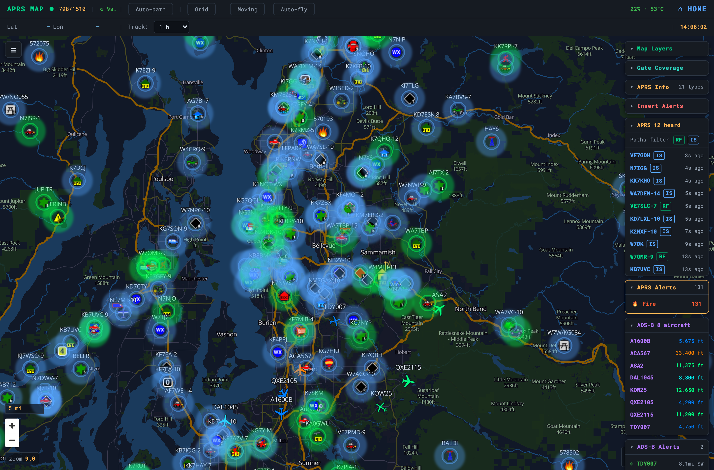

ADS-B Aircraft
Hear and map nearby aircraft on 1090 MHz with a cheap RTL-SDR — offline

ADS-B puts nearby aircraft on the same live map as APRS. A cheap RTL-SDR dongle tuned to 1090 MHz hears the Mode S / ADS-B broadcasts that airliners and most GA aircraft send continuously — position, altitude, speed, and callsign — and OASIS decodes, records, and plots them with no internet and no subscription.
ADS-B holds the RTL-SDR exclusively. Only one consumer can own a dongle at a time, so ADS-B is mutually exclusive with the APRS SDR feed, satellite listen, and OpenWebRX on the same dongle. It ships off by default and is started on demand from the dashboard card; starting it stops the APRS SDR feed (and vice-versa). A second dongle lets you run both at once.
Turning it on
ADS-B installs two systemd units, both disabled until you ask for them from the dashboard’s ADS-B card (which needs service controls enabled). Pressing START enables and starts both; STOP disables and stops them, releasing the dongle.
| Unit | Role |
|---|---|
dump1090-fa | The Mode S / ADS-B decoder (installed via apt). Owns the RTL-SDR and writes live positions to aircraft.json. |
adsb-api | OASIS’s own recorder + history API on :8086. Polls aircraft.json, records observations to a local SQLite database, evaluates alerts against your station location, and serves it all to the map. |
Install happens through the setup menu or directly:
python3 services/adsb/install.py # installs dump1090-fa + the adsb-api unit
python3 services/adsb/install.py --serve # run the recorder/API in the foreground (dev)Reading the map
With ADS-B running, the map’s right rail gains two panels. The behaviour mirrors the APRS layer so there is nothing new to learn:
- ADS-B N aircraft — the live list, each row an ICAO hex or flight number with its current altitude. Altitude is colour-coded (low to high) and the same colour tints the aircraft icon on the map, so a glance shows who is on approach versus overflying at cruise.
- ADS-B Alerts — aircraft that tripped a
proximity (within
ADSB_ALERT_RADIUS_KM, default 50 km) or altitude rule, with bearing and distance from your station. The alert list is a recent-events ring buffer.
Where a flight number resolves to an operator, OASIS tags it from an offline airline
table (common/js/adsb-operators.js, built by
scripts/build-adsb-operators.py) — no lookup call leaves the box.
The history API
The adsb-api daemon on :8086 is what the map talks to,
and you can query it directly — handy for debugging or scripting:
| Endpoint | Returns |
|---|---|
GET /health | Poller liveness — the age of the last aircraft.json read. Stale age means dump1090-fa stopped feeding. |
GET /aircraft | The current live snapshot (what the map plots). |
GET /history?since=<ts>&icao=<hex> | Recorded observations from the SQLite history database. |
GET /alerts | Recent proximity / altitude alert events. |
The recorder is a separate daemon from the Flask app. If you
change ADS-B recorder code, restart it with sudo systemctl restart
adsb-api — restarting the OASIS web server alone will not pick it up.
Configuration & off-Pi testing
Environment variables override the defaults, which also lets you run
adsb.serve() on a laptop with no dump1090-fa by pointing it at a saved
JSON file and a writable database path:
| Variable | Default | Purpose |
|---|---|---|
ADSB_JSON_PATH | /run/dump1090-fa/aircraft.json | The live aircraft JSON to poll |
ADSB_DB_PATH | /var/lib/adsb/adsb-history.db | SQLite history database |
ADSB_API_PORT | 8086 | HTTP API port |
ADSB_ALERT_RADIUS_KM | 50 | Proximity-alert radius around the station |
ADSB_POLL_SECS | 1.0 | Poll interval for aircraft.json |
Troubleshooting
| Symptom | Cause & fix |
|---|---|
Dashboard card is grey / NOT INSTALLED |
ADS-B isn’t installed. Run python3 services/adsb/install.py (or pick it in the setup menu), then reload the dashboard. |
| START fails, or the APRS feed died when you started ADS-B | Expected on a single dongle — they share it. Stop the APRS SDR feed first, or fit a second RTL-SDR. Check journalctl -u dump1090-fa -e for usb_claim_interface error -6 (dongle busy). |
| Card is UP but 0 aircraft | Decoder running, nothing heard. 1090 MHz is line-of-sight — you need a clear-sky antenna. Confirm decodes at the source: journalctl -u dump1090-fa -f. A basic dongle whip indoors hears little. |
| Map plots nothing but the list has aircraft | The map needs your station position and a base map for the area. Aircraft without a position fix (message-only) never plot. |
/health shows a growing age |
dump1090-fa stopped writing aircraft.json. Restart it: sudo systemctl restart dump1090-fa. If adsb-api code changed, also sudo systemctl restart adsb-api. |
| No alerts ever fire | Alerts are relative to your station. Set position on the GPS card, and widen the radius with ADSB_ALERT_RADIUS_KM if traffic is sparse. |